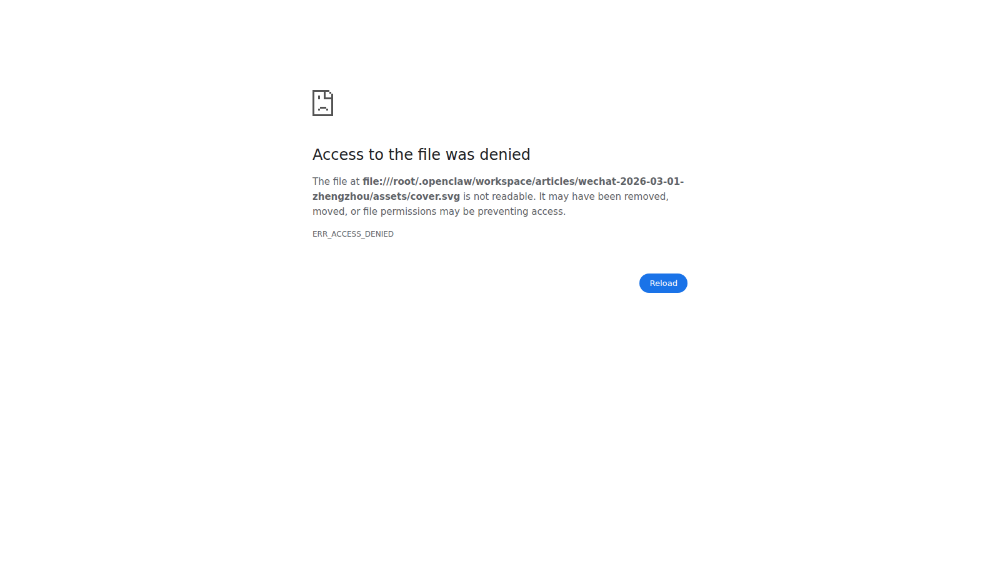
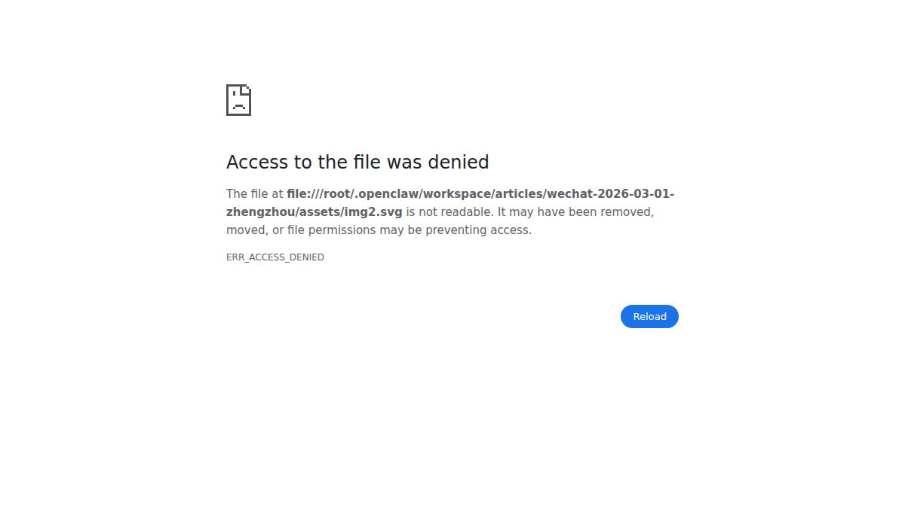
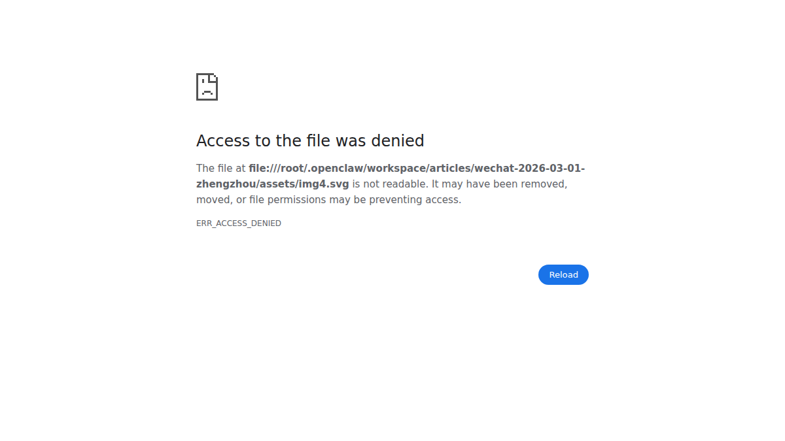

这两年，“算力”成了最热词之一。
但在很多城市，算力还是“概念”；在郑州，它正在变成“产业”。
为什么这么说？
因为一个很硬的信号摆在面前：2025-04-16 超聚变探索者大会上，超聚变董事长刘宏云提到，公司 2024 年营收约 435 亿元。这不是一条企业新闻，而是一个城市产业路径被验证的证据。
如果把这件事拆开看，会发现郑州的变化不是偶然，而是“政策 + 基础设施 + 龙头牵引 + 场景落地”共同作用的结果。
很多人对郑州的印象还停留在“交通枢纽”。
但今天，郑州正在从“货运枢纽”升级为“数字枢纽”。
这种升级背后有三个底层支撑：
说白了，郑州不是在追一个热点，而是在补一块“下一轮产业竞争的底板”。

因为这代表三层含义：
如果没有真实订单和行业场景，规模不可能持续放大。约435亿元不是“估值故事”，是需求故事。
龙头企业跑起来，带动的不只是自己：整机、液冷、供配电、运维、软件、服务都会被拉动。
企业增长会倒逼城市升级：电力保障、网络时延、人才供给、政务效率都要跟上。
所以，真正重要的不是“哪家公司涨了”，而是郑州具备了把算力变成产业组织能力的条件。
只拼机房，谁都能建；
拼闭环，不是谁都能做。
郑州要形成的是这条闭环：
基础设施（算力）→ 行业场景（用力）→ 产业协同（放大）→ 持续投资（复利）
如果闭环跑通，算力就不再只是成本中心，而是增长引擎。
这也是为什么我们看“算力之城”，不能只看参数，要看三件事：

政企客户最关心的，从来不是 GPU 型号，而是：
这也意味着，下一阶段比拼的重点会从“谁有算力”转向“谁能交付结果”。
算力只是起点，行业解决方案才是终点。
谁先完成这三步，谁就不是“算力节点”，而是“算力中心”。
“郑州怎么成了算力之城？”答案不是一句口号，而是一条路径：
先有基础设施，再有龙头牵引，再有场景落地，最后形成城市级产业复利。
“一家公司，约435亿元”只是开始。更值得关注的是：这座城市，正在把算力变成新的生产力组织方式。
口径说明：文中“约435亿元”来自 2025-04-16 超聚变探索者大会公开口径，发布时建议附具体报道链接，并标注“以公司正式披露为准”。